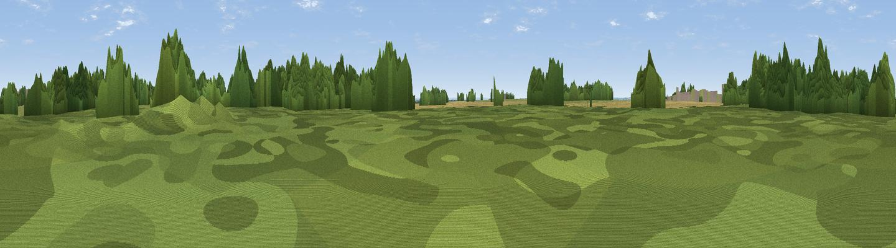

Potter Hill
#43771 in England · top 89% of its area beats it · near SwinderbyWhere it is
The exact computed spot (SK 86221 60472). Click the marker for map links.
The view, rendered

A 360° render of this exact spot computed from the terrain model, tree cover and land cover — summer colours, afternoon light, calibrated against photographs of famous viewpoints. Real trees, hedges and buildings will differ in detail.
The panorama
Grey silhouette: terrain skyline in each direction (720 bearings, Earth curvature and refraction included). Dashed green: skyline with trees (+15 m) and buildings (+8 m) as obstacles. Blue strip: how far the ground is visible on each bearing.
Where the view opens
Wedge length = distance to the farthest visible ground on that bearing (vegetation-aware). Rings at 10, 25 and 50 km.
What fills the view
59% woodland · 22% cropland · 18% grassland ·
Angular shares of the visible panorama (visual magnitude), not map area. Landscape diversity 0.43 (0–1 Shannon).
Key numbers
More beautiful places nearby
The staircase of upgrades: each row has a higher view potential than everything closer. Driving times are estimates from straight-line distance, calibrated against real road routing — check an actual route before setting out.
| Place | Direction | Drive | Score |
|---|---|---|---|
| Viewpoint near Collingham | NW · 2 km | ~5 min | 42.6 |
| Danethorpe Hill | SW · 4 km | ~9 min | 43.8 |
| Slacks Hill | N · 6 km | ~13 min | 45.8 |
| Viewpoint near Harmston | ENE · 11 km | ~22 min | 47.0 |
| Viewpoint near Wellingore | ESE · 12 km | ~23 min | 52.5 |
| Viewpoint near Lincoln | NE · 16 km | ~28 min | 54.0 |
| Lincoln Castle | NE · 16 km | ~28 min | 54.5 |
| Viewpoint near Burton-by-Lincoln | NNE · 18 km | ~31 min | 54.9 |
53.13444, -0.71270 · source: osm peak · position refined by local search. Computed location — check access rights before visiting.